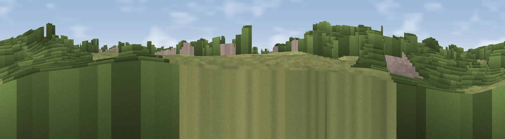

Viewpoint near Sedgefield
#45491 in England · top 96% of its area beats it · near SedgefieldWhere it is
The exact computed spot (NZ 34548 28787). Click the marker for map links.
The view, rendered

A 360° render of this exact spot computed from the terrain model, tree cover and land cover — summer colours, afternoon light, calibrated against photographs of famous viewpoints. Real trees, hedges and buildings will differ in detail.
The panorama
Grey silhouette: terrain skyline in each direction (720 bearings, Earth curvature and refraction included). Dashed green: skyline with trees (+15 m) and buildings (+8 m) as obstacles. Blue strip: how far the ground is visible on each bearing.
Where the view opens
Wedge length = distance to the farthest visible ground on that bearing (vegetation-aware). Rings at 10, 25 and 50 km.
What fills the view
59% woodland · 23% grassland · 10% water · 6% cropland · 2% built-up
Angular shares of the visible panorama (visual magnitude), not map area. Landscape diversity 0.49 (0–1 Shannon).
Key numbers
More beautiful places nearby
The staircase of upgrades: each row has a higher view potential than everything closer. Driving times are estimates from straight-line distance, calibrated against real road routing — check an actual route before setting out.
| Place | Direction | Drive | Score |
|---|---|---|---|
| Viewpoint near Bishop Middleham | NNW · 4 km | ~10 min | 61.1 |
| Viewpoint near Kelloe | N · 6 km | ~12 min | 64.6 |
| Catley Hill | NNE · 6 km | ~12 min | 67.4 |
| Viewpoint near Quarrington Hill | N · 9 km | ~18 min | 73.1 |
| Viewpoint near Easington Colliery | NNE · 19 km | ~33 min | 74.4 |
| Viewpoint near Houghton-le-Spring | N · 22 km | ~37 min | 76.0 |
| Viewpoint near Newton Under Roseberry | ESE · 23 km | ~38 min | 78.3 |
| Viewpoint near Lazenby | ESE · 24 km | ~40 min | 82.1 |
54.65300, -1.46607 · source: osm viewpoint · position refined by local search. Computed location — check access rights before visiting.